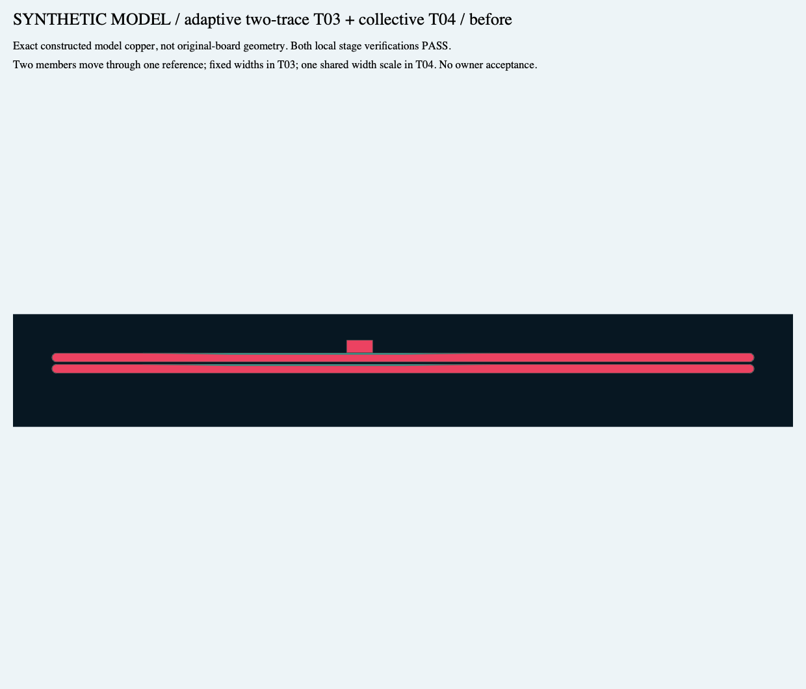
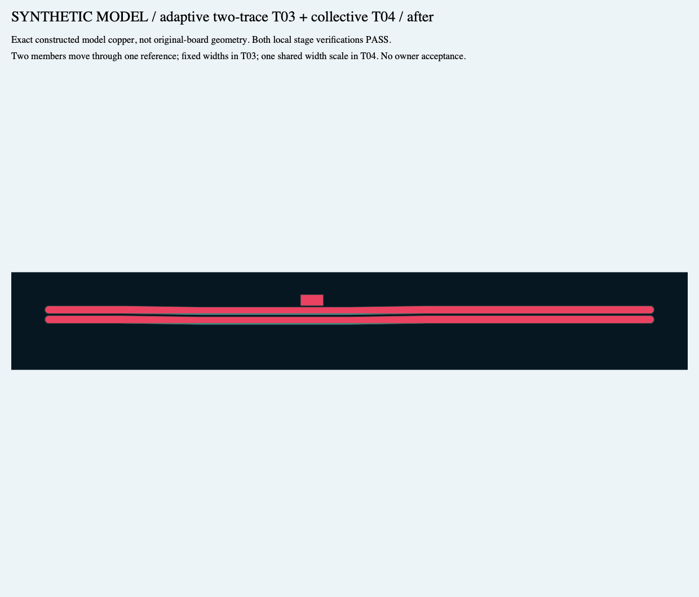
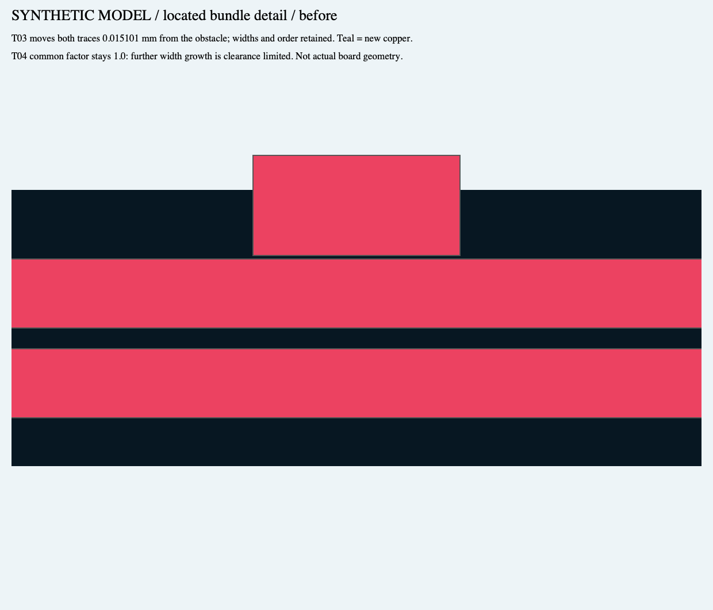
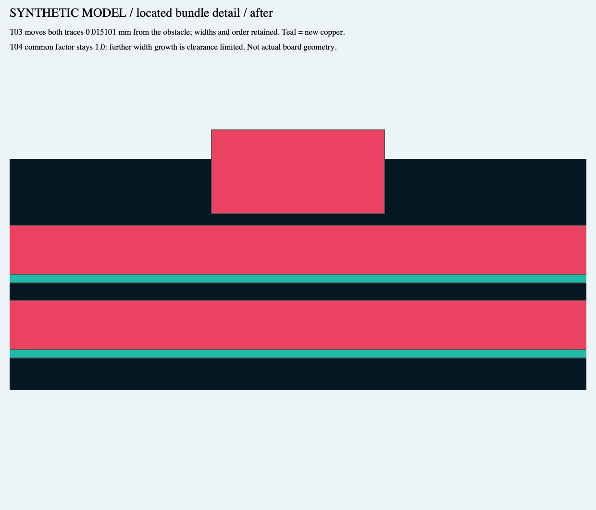

Explicit synthetic model; not board geometry. T03 makes a positive coordinated displacement; T04 correctly returns common factor 1.0 KEEP because the restored minimum gap leaves no width-growth margin.
All suites · Receipt · Local full evidence bindings


